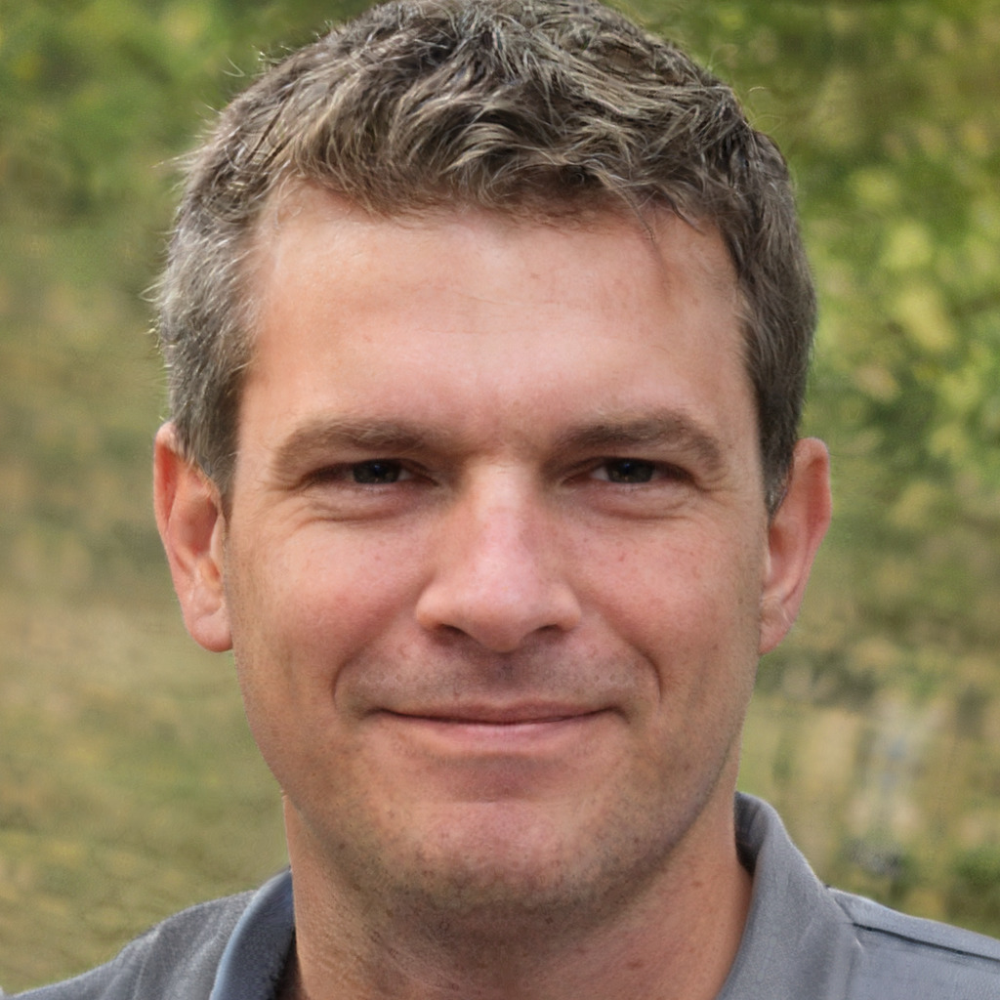

Lochquarry Outdoor Centre is set in acres of land in the heart of the majestic Argyll hills. On our doorstep is not only magnificent scenery, but also a breath-taking selection of outdoor and adventurous activities. With activities designed to meet the needs of all ages and experiences of young people, Lochquarry truly brings adventure to everyone.
Each activity is run under the instruction of one of our highly trained staff and all safety equipment is provided.Our activities are very popular with youth groups including Scouts and Guides.

Centre Manager. She is responsible for the overall running of the centre and all of its activities. She loves pole climbing.

Senior Instructor (Land). He is responsible for overseeing all of the land based activities. He likes hillwalking in the beautiful Scottish highlands.

Centre Administrator. She is responsible for making bookings and arranging activity slots for groups. She loves making sure everyone has a great time when the visit Lochquarry.
‘Thank you to all the staff who worked so hard, in awful weather, to make sure that all the pupils had an amazing experience’ - Mrs Kahn, Hillend Primary School
To book your next adventure at Lochquarry, Please Phone 01475 229 8311.